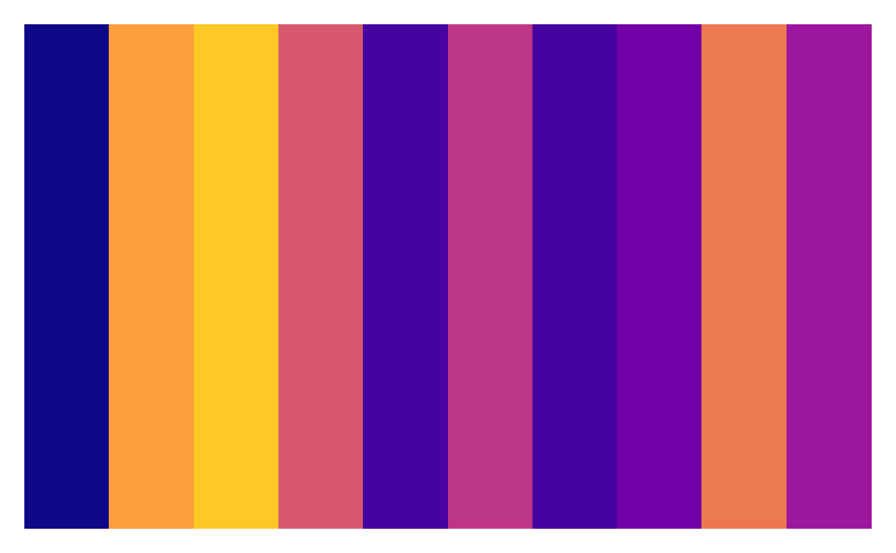

A standardized color palette to be used for all plots within the NEST project.
color_palette(n = 10, palette = "nest")
Arguments
| n | (
|
|---|---|
| palette | (
|
Examples
library(grid) plot_pal <- function(x) { grid.newpage() pushViewport(plotViewport(rep(1, 4))) pushViewport(viewport(layout = grid.layout(1, ncol = length(x)))) for(i in seq_along(x)) { grid.rect(gp = gpar(fill = x[i], col = NA), vp = viewport(layout.pos.col=i, layout.pos.row=1)) } } plot_pal(color_palette(n = 10, palette = "nest"))plot_pal(color_palette(n = 10, palette = "stream"))
plot_pal(color_palette(n = 10, palette = "viridis")) 